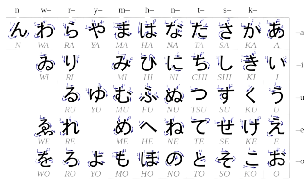
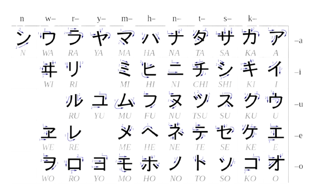

Japanese Writing System
Japanese uses multiple writing systems together, each serving a specific role in reading and writing.
- Hiragana: Phonetic script used for grammar, particles, and native Japanese words.
- Katakana: Phonetic script used for foreign words, loanwords, and emphasis.
- Kanji: Meaning-based characters used for vocabulary, nouns, and verb roots.
- Romaji: Japanese sounds written in the Latin alphabet, mainly for beginners and typing.
Hiragana (ひらがな)
Hiragana is the core phonetic script used for grammar, particles, and native Japanese words.
- 46 basic characters with additional sounds using dakuten ( ゛) and handakuten ( ゜)
- Represents pure Japanese sounds (a, ka, sa, ta…)
- Used for grammatical particles (は, が, を, に, で)
- Used for verb and adjective endings (okurigana)
- Words without Kanji are written completely in Hiragana
- Stroke order is important for correct writing
- First script learned by children and beginners
- Essential for reading basic Japanese sentences

Katakana (カタカナ)
Katakana is mainly used for foreign words, loanwords, and emphasis.
- 46 basic characters with the same sounds as Hiragana
- Used for foreign loanwords (e.g., コンピュータ – computer)
- Used for foreign names, places, and brand names
- Common in menus, advertisements, and pop culture
- Used to give emphasis, similar to italics in English
- Frequently seen in science, technology, and medicine
- Characters have a sharp and angular writing style
- Pronunciation rules are identical to Hiragana

Kanji (漢字)
Kanji are meaning-based characters borrowed from Chinese and adapted into Japanese.
- Each character represents meaning rather than sound
- Used mainly for nouns, verb roots, adjectives, and names
- Over 2,000 commonly used characters (Jōyō Kanji)
- Each Kanji may have multiple readings
- On-yomi (Chinese-based reading)
- Kun-yomi (Japanese-based reading)
- Helps reduce ambiguity in sentences
- Learning focuses on meaning, stroke order, and radicals
Romaji (ローマ字)
Romaji is the representation of Japanese sounds using the Latin (English) alphabet.
- Mainly used by beginners to learn pronunciation
- Used for typing Japanese using keyboards
- Common on road signs, maps, and passports
- Not commonly used in native Japanese writing
- Overuse can slow real reading and writing progress
- Should be treated as a temporary learning aid
Comparison of Writing Systems
| Script | Type | Main Usage | Number of Characters | Difficulty |
|---|---|---|---|---|
| Hiragana | Phonetic | Grammar, native words | 46 | Easy |
| Katakana | Phonetic | Foreign words, emphasis | 46 | Easy |
| Kanji | Logographic | Meaning, vocabulary | 2000+ | Hard |
| Romaji | Alphabetic | Input & beginners | 26 letters | Very Easy |